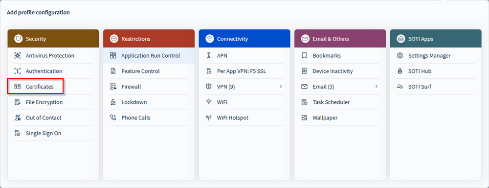
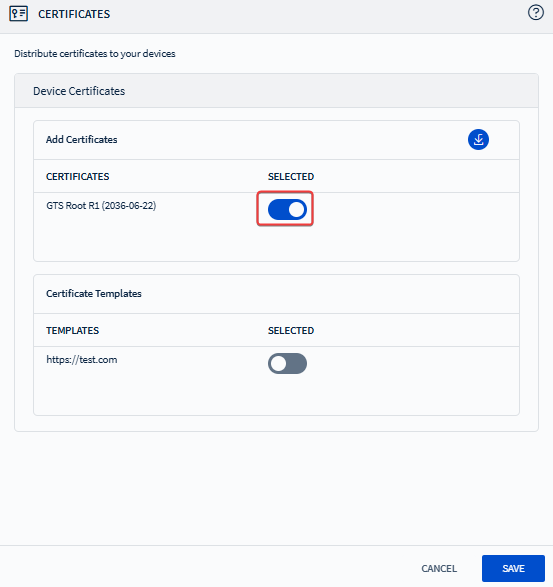

Deploying Manually Uploaded Certificates
Deploy externally sourced certificates to devices using the Certificates profile configuration in SOTI MobiControl.
Note: To issue managed certificates
using dynamic templates, see Deploying Managed (Dynamic) Certificates.
- From the main menu, select Profiles.
- In the Profiles view, either create a new profile or select an existing profile.
- On your profile, navigate to the Configurations tab and select Add ().
-
Select Certificates from the
Security section.
 - In the Certificates panel, select the Add Certificates icon ().
- In the Add Certificate Panel, select Browse () to upload the certificate.
- Enter the certificate’s password if prompted.
- Select Import () to upload the certificate. Once uploaded, the certificate is available for selection in your certificate payload.
-
To configure certificate usage in a profile:
-
Toggle Selected to select which certificate(s) to distribute when applying the profile.
 -
Enable or disable the toggle next to a certificate to include or exclude it from the profile.
-
You can add multiple certificates to a single profile.
-
Android Plus Consideration
You must also assign an Authentication profile configuration with a User Password
Policy. This can be in the same profile or a separate one.
Tip: For compatibility of vendors by certificate
deployment options, see Android Plus Vendor Compatibility Matrix: Certificates.
Apple Consideration (for PKCS #12 Certificates)
Configure the following additional options:
- Allow all apps access: Grants access to the private key for all apps.
- Extractable key: Enables the private key to be exported from the key chain.
Windows Modern Desktop Considerations
Configure the following additional options:
Target Certificate Store: Specify the store to install your certificate. Choose
Device or User store.
- Root Certificate Installation Location: You cannot install Root certificates in the Trusted Root CA location of the User store.
Important: Client PFX Certificates are supported
only on Windows 10 or later; they are ignored on older versions.
- To delete a certificate, select Delete (). This permanently removes it from the list.
- Once configured, assign the profile to your devices to install your certificates.